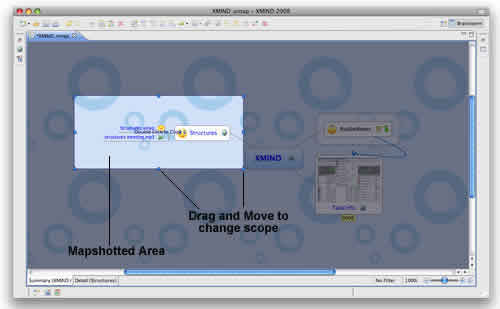
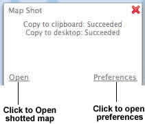
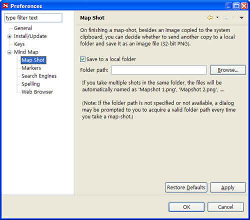

Map shot lets you share either the whole or a part of the map with someone not nearby in seconds. Here's how to:
Do Mapshot:
- Open a map.
- You have two manners to begin Mapshot:
- Click 'F7'.
- Choose 'Tools > Map Shot' on the menu.
- Select the area with mouse.
- Chosen area will be highlight.
- Change the area scope by dragging and moving the slider on the border.
- Double click the chosen area, there will be a dialog to let you save image file.*


Note:
- The saved image file is JPG.
- You can change Map shot settings via choosing "Edit > Preferences > Mind Map > Mapshot" on the menu.

You may also be interested in...